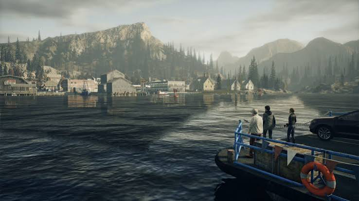
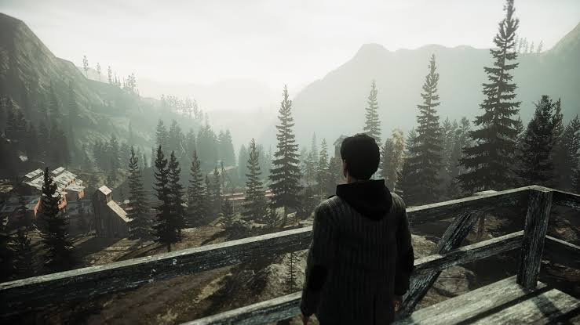
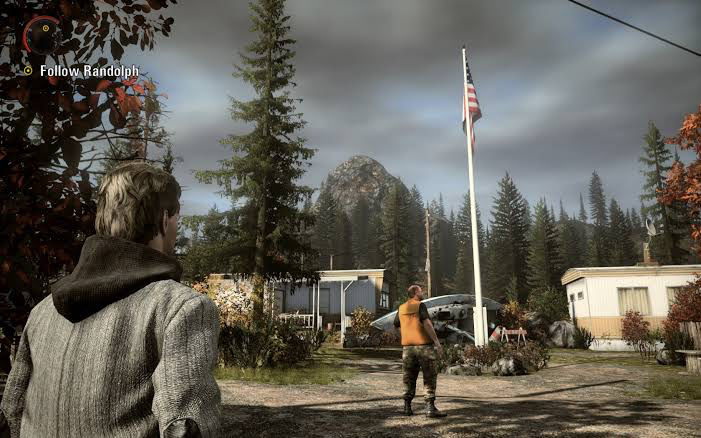

Об игре
Игра окунает игрока в историю писателя.Алан Уейк испытвает художественный кризис и отправляется на отдых в Брайт-Фоллс.Однако там его ожидают очень большие неприятности
Персонажи
Алан Уейк
Успешный писатель,семьянин.Он испывает художественный кризис и отправляется в Брайт-Фоллс за вдохновением,не подозревая о том что сам станет творцом конца.
Барри Уиллер
Менеджер и лучший друг Уейка,отправляется за ним из за того что Алан не берет трубки и невольно становится участником сюжета Алана.Он явно боится но не менее восторжен всем происходящим.
Элис Уейк
Жена Алана Уейка,основные события игры разворачиваются именно из за неё
Сара Брейкер
Шериф Брайт-Фоллс,помогает Алану хотя изначально считала его сумасшедшим.
Советы и моя честная оценка
Советы
- Совет 1.На кошмарной сложности,если чертей овер много,бежать
- Совет 2.Экономить пули дробовика на больших чертей
- Совет 3.Геймплей чутка прямой,так что не стоит рассчитывать на нечто иное
Как бороться с одержимыми
- Светить фонарем что бы сделать уязвимыми
- Расстрелять из ганов
- Собрать выпавшие ресы
Моя оценка
Перепроходил кучу раз.Главный минус это геймплей,он прямой.Однако читка листов,задумка,реализация и сюжет на высочайшем уровне.Ставлю ей 9/10
Характеристики ALAN WAKE
Сюжет
Атмосфера
Геймплей
Галерея ALAN WAKE


